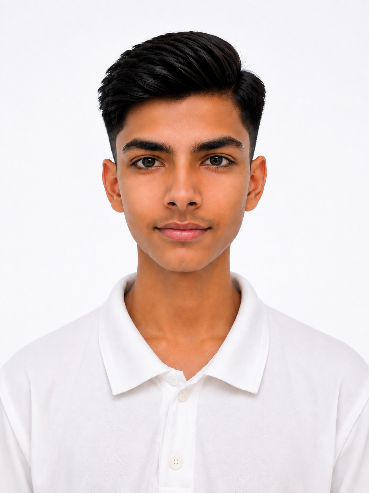

हमारा मिशन (Our Mission)
TopperWay का मुख्य उद्देश्य Bihar Board Class 10 के विद्यार्थियों को बिना वजह सैकड़ों किताबें, गाइड और गेस पेपर खरीदे बिना स्मार्ट तरीके से परीक्षा की तैयारी कराना है। हम "पूरी किताब मत पढ़ो, पहले जानो कि क्या पढ़ना सबसे जरूरी है" के सिद्धांत पर काम करते हैं।
AI-Powered स्मार्ट एनालिसिस
हमारा प्लेटफॉर्म बिहार बोर्ड के पिछले 10 से 15 वर्षों के प्रश्न पत्रों का गहन विश्लेषण करता है। AI तकनीक की मदद से हम टॉपिक रिपीटेशन, क्वेश्चन फ्रीक्वेंसी और मार्क्स डिस्ट्रीब्यूशन के आधार पर आपको High-Priority टोपिक्स और प्रश्नों की प्राथमिकता (Tiers 1 to 4) दिखाते हैं।
हम अलग क्यों हैं?
हम कभी भी परीक्षा में 100% प्रश्न आने का झूठा दावा नहीं करते। इसके बजाय, हम डेटा और हिस्टोरिकल ट्रेंड्स के आधार पर एक व्यवस्थित प्राथमिकता प्रणाली और परीक्षा से ठीक 1 दिन पहले रिवीज़न करने के लिए 1-Day Revision Mode प्रदान करते हैं।

Aryani
Founder & Developer, TopperWay
बिहार से हूँ और खुद AI की मदद से coding सीखकर ये platform बनाया है, ताकि Bihar Board के students को कम समय में सही चीज़ें पढ़ने में मदद मिल सके।